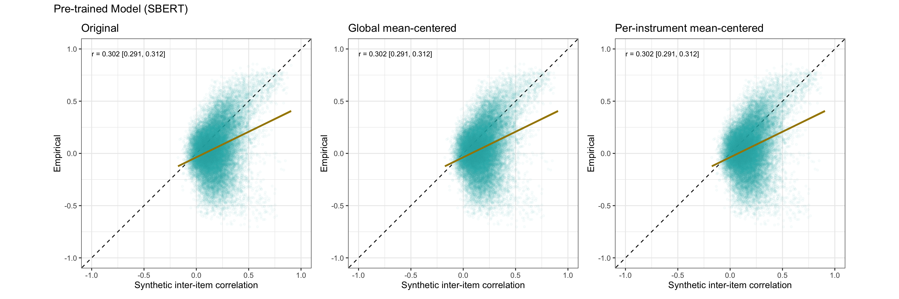
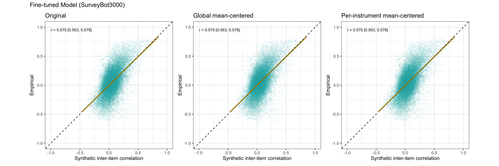

This document implements the method suggested by Pellert et al. for
removing common linguistic features by subtracting the mean embedding
vector from each item embedding.
Load Data
# Load human data
rr_validation_human_data = arrow::read_feather(
file = file.path(data_path, glue("{model_name}.raw.validation-study-2024-11-01.human.feather"))
)
# Load mapping data
rr_validation_mapping_data = arrow::read_feather(
file = file.path(data_path, glue("{model_name}.raw.validation-study-2024-11-01.mapping2.feather"))
)
# Load pre-trained model embeddings
pt_rr_validation_machine_data = rio::import("https://github.com/synth-science/surveybot3000/raw/refs/heads/main/validation_study/embeddings_all-mpnet-base-v2.feather")
pt_rr_validation_machine_data <- pt_rr_validation_machine_data %>%
rowwise() %>%
mutate(embed_id = list(1:length(embeddings))) %>%
unnest(cols = c(embeddings, embed_id)) %>%
select(-item) %>%
pivot_wider(names_from = id, values_from = embeddings) %>%
select(-embed_id)
# Load fine-tuned model embeddings
rr_validation_machine_data = rio::import("https://github.com/synth-science/surveybot3000/raw/refs/heads/main/validation_study/embeddings_surveybot3000.feather")
rr_validation_machine_data <- rr_validation_machine_data %>%
rowwise() %>%
mutate(embed_id = list(1:length(embeddings))) %>%
unnest(cols = c(embeddings, embed_id)) %>%
select(-item) %>%
pivot_wider(names_from = id, values_from = embeddings) %>%
select(-embed_id)
cat("Loaded embeddings:\n")
## Loaded embeddings:
cat(" Pre-trained dimensions:", nrow(pt_rr_validation_machine_data), "\n")
## Pre-trained dimensions: 768
cat(" Pre-trained items:", ncol(pt_rr_validation_machine_data), "\n")
## Pre-trained items: 246
cat(" Fine-tuned dimensions:", nrow(rr_validation_machine_data), "\n")
## Fine-tuned dimensions: 768
cat(" Fine-tuned items:", ncol(rr_validation_machine_data), "\n")
## Fine-tuned items: 246
cat(" Human data respondents:", nrow(rr_validation_human_data), "\n")
## Human data respondents: 387
cat(" Human data items:", ncol(rr_validation_human_data), "\n")
## Human data items: 246
Method: Mean-Centered Embeddings
Following Pellert et al., we compute the mean embedding across all
items (the “questionnaire embedding”) and subtract it from each item
embedding: \(\mathbf{y}_i -
\bar{\mathbf{y}}\) for item \(i\), where \(\bar{\mathbf{y}} = \frac{1}{n} \sum_{i=1}^{n}
\mathbf{y}_i\).
We implement two variants: 1. Global centering:
Subtract the mean across all items 2. Per-instrument
centering: Subtract the mean within each
questionnaire/instrument (as Pellert et al. actually did)
# Function to center embeddings by subtracting the mean
center_embeddings_global <- function(embedding_matrix) {
# embedding_matrix: rows = dimensions, columns = items
# Compute mean across all items (row means)
mean_embedding <- colMeans(embedding_matrix, na.rm = TRUE)
# Subtract mean from each item
centered <- embedding_matrix - mean_embedding
return(centered)
}
# Function to center embeddings per instrument
center_embeddings_by_instrument <- function(embedding_matrix, mapping_data) {
# embedding_matrix: rows = dimensions, columns = items
# mapping_data: dataframe with 'variable' and 'instrument' columns
centered <- embedding_matrix
# Get unique instruments
instruments <- unique(mapping_data$instrument)
for (instr in instruments) {
# Get items belonging to this instrument
item_ids <- mapping_data %>%
filter(instrument == instr) %>%
pull(variable)
# Find which columns correspond to these items
item_cols <- which(colnames(embedding_matrix) %in% item_ids)
if (length(item_cols) > 0) {
# Compute mean embedding for this instrument
instr_mean <- colMeans(embedding_matrix[, item_cols, drop = FALSE], na.rm = TRUE)
# Subtract instrument mean from each item in this instrument
centered[, item_cols] <- sweep(embedding_matrix[, item_cols, drop = FALSE],
2, instr_mean, "-")
}
}
return(centered)
}
# Global centering
pt_centered_global <- center_embeddings_global(pt_rr_validation_machine_data)
ft_centered_global <- center_embeddings_global(rr_validation_machine_data)
# Per-instrument centering
pt_centered_instrument <- center_embeddings_by_instrument(pt_rr_validation_machine_data,
rr_validation_mapping_data)
ft_centered_instrument <- center_embeddings_by_instrument(rr_validation_machine_data,
rr_validation_mapping_data)
cat("Centered embeddings created\n")
## Centered embeddings created
cat("Global centering:\n")
## Global centering:
cat(" Pre-trained: mean of means =", mean(colMeans(pt_centered_global)), "(should be ~0)\n")
## Pre-trained: mean of means = 3.162256e-19 (should be ~0)
cat(" Fine-tuned: mean of means =", mean(colMeans(ft_centered_global)), "(should be ~0)\n")
## Fine-tuned: mean of means = -8.726505e-20 (should be ~0)
cat("\nPer-instrument centering:\n")
##
## Per-instrument centering:
cat(" Pre-trained: overall mean =", mean(colMeans(pt_centered_instrument)), "\n")
## Pre-trained: overall mean = 3.951337e-19
cat(" Fine-tuned: overall mean =", mean(colMeans(ft_centered_instrument)), "\n")
## Fine-tuned: overall mean = -1.712085e-20
cat(" Number of instruments:", n_distinct(rr_validation_mapping_data$instrument), "\n")
## Number of instruments: 20
Compute Correlations
Now we compute pairwise correlations (cosine similarities) using the
original, globally-centered, and per-instrument-centered embeddings.
# Original correlations
pt_original_pairs <- join_pairwise_correlation(rr_validation_human_data, pt_rr_validation_machine_data)
ft_original_pairs <- join_pairwise_correlation(rr_validation_human_data, rr_validation_machine_data)
# Globally mean-centered correlations
pt_centered_global_pairs <- join_pairwise_correlation(rr_validation_human_data, as.data.frame(pt_centered_global))
ft_centered_global_pairs <- join_pairwise_correlation(rr_validation_human_data, as.data.frame(ft_centered_global))
# Per-instrument mean-centered correlations
pt_centered_instrument_pairs <- join_pairwise_correlation(rr_validation_human_data, as.data.frame(pt_centered_instrument))
ft_centered_instrument_pairs <- join_pairwise_correlation(rr_validation_human_data, as.data.frame(ft_centered_instrument))
cat("Computed pairwise correlations:\n")
## Computed pairwise correlations:
cat(" Number of item pairs:", nrow(pt_original_pairs), "\n")
## Number of item pairs: 30135
Results: Accuracy Comparison
# Pre-trained model
pt_original_accuracy <- broom::tidy(cor.test(pt_original_pairs$empirical_r, pt_original_pairs$synthetic_r))
pt_centered_global_accuracy <- broom::tidy(cor.test(pt_centered_global_pairs$empirical_r, pt_centered_global_pairs$synthetic_r))
pt_centered_instrument_accuracy <- broom::tidy(cor.test(pt_centered_instrument_pairs$empirical_r, pt_centered_instrument_pairs$synthetic_r))
# Fine-tuned model
ft_original_accuracy <- broom::tidy(cor.test(ft_original_pairs$empirical_r, ft_original_pairs$synthetic_r))
ft_centered_global_accuracy <- broom::tidy(cor.test(ft_centered_global_pairs$empirical_r, ft_centered_global_pairs$synthetic_r))
ft_centered_instrument_accuracy <- broom::tidy(cor.test(ft_centered_instrument_pairs$empirical_r, ft_centered_instrument_pairs$synthetic_r))
# Create comparison table
results <- bind_rows(
pt_original_accuracy %>%
mutate(model = "Pre-trained (SBERT)", method = "Original") %>%
select(model, method, accuracy = estimate, conf.low, conf.high),
pt_centered_global_accuracy %>%
mutate(model = "Pre-trained (SBERT)", method = "Global mean-centered") %>%
select(model, method, accuracy = estimate, conf.low, conf.high),
pt_centered_instrument_accuracy %>%
mutate(model = "Pre-trained (SBERT)", method = "Per-instrument mean-centered") %>%
select(model, method, accuracy = estimate, conf.low, conf.high),
ft_original_accuracy %>%
mutate(model = "Fine-tuned (SurveyBot3000)", method = "Original") %>%
select(model, method, accuracy = estimate, conf.low, conf.high),
ft_centered_global_accuracy %>%
mutate(model = "Fine-tuned (SurveyBot3000)", method = "Global mean-centered") %>%
select(model, method, accuracy = estimate, conf.low, conf.high),
ft_centered_instrument_accuracy %>%
mutate(model = "Fine-tuned (SurveyBot3000)", method = "Per-instrument mean-centered") %>%
select(model, method, accuracy = estimate, conf.low, conf.high)
)
kable(results, digits = 3, caption = "Manifest accuracy (Pearson r) between synthetic and empirical item correlations")
Manifest accuracy (Pearson r) between synthetic and empirical
item correlations
| Pre-trained (SBERT) |
Original |
0.302 |
0.291 |
0.312 |
| Pre-trained (SBERT) |
Global mean-centered |
0.302 |
0.291 |
0.312 |
| Pre-trained (SBERT) |
Per-instrument mean-centered |
0.302 |
0.291 |
0.312 |
| Fine-tuned (SurveyBot3000) |
Original |
0.570 |
0.563 |
0.578 |
| Fine-tuned (SurveyBot3000) |
Global mean-centered |
0.570 |
0.563 |
0.578 |
| Fine-tuned (SurveyBot3000) |
Per-instrument mean-centered |
0.570 |
0.563 |
0.578 |
Interpretation
# Calculate improvements
pt_improvement_global <- pt_centered_global_accuracy$estimate - pt_original_accuracy$estimate
pt_improvement_instrument <- pt_centered_instrument_accuracy$estimate - pt_original_accuracy$estimate
ft_improvement_global <- ft_centered_global_accuracy$estimate - ft_original_accuracy$estimate
ft_improvement_instrument <- ft_centered_instrument_accuracy$estimate - ft_original_accuracy$estimate
cat("\n")
cat("Change in accuracy after mean-centering:\n")
## Change in accuracy after mean-centering:
cat("\nPre-trained model:\n")
##
## Pre-trained model:
cat(" Global centering: ", sprintf("%+.3f", pt_improvement_global), "\n")
## Global centering: -0.000
cat(" Per-instrument centering:", sprintf("%+.3f", pt_improvement_instrument), "\n")
## Per-instrument centering: +0.000
cat("\nFine-tuned model:\n")
##
## Fine-tuned model:
cat(" Global centering: ", sprintf("%+.3f", ft_improvement_global), "\n")
## Global centering: +0.000
cat(" Per-instrument centering:", sprintf("%+.3f", ft_improvement_instrument), "\n")
## Per-instrument centering: -0.000
# Determine best method for each model
pt_best <- c("original", "global", "instrument")[which.max(c(pt_original_accuracy$estimate,
pt_centered_global_accuracy$estimate,
pt_centered_instrument_accuracy$estimate))]
ft_best <- c("original", "global", "instrument")[which.max(c(ft_original_accuracy$estimate,
ft_centered_global_accuracy$estimate,
ft_centered_instrument_accuracy$estimate))]
cat("Best performing method:\n")
## Best performing method:
cat(" Pre-trained model: ", pt_best, "\n")
## Pre-trained model: original
cat(" Fine-tuned model: ", ft_best, "\n")
## Fine-tuned model: global
Scatter Plots
Pre-trained Model
library(patchwork)
p1 <- ggplot(pt_original_pairs, aes(synthetic_r, empirical_r)) +
geom_abline(linetype = "dashed") +
geom_point(color = "#00A0B0", alpha = 0.03, size = 1) +
geom_smooth(method = "lm", color = "#a48500", fill = "#EDC951") +
annotate("text", x = -1, y = 0.98, hjust = 0, vjust = 1, size = 3,
label = sprintf("r = %.3f [%.3f, %.3f]",
pt_original_accuracy$estimate,
pt_original_accuracy$conf.low,
pt_original_accuracy$conf.high)) +
xlab("Synthetic inter-item correlation") +
ylab("Empirical") +
ggtitle("Original") +
coord_fixed(xlim = c(-1, 1), ylim = c(-1, 1)) +
theme_bw()
p2 <- ggplot(pt_centered_global_pairs, aes(synthetic_r, empirical_r)) +
geom_abline(linetype = "dashed") +
geom_point(color = "#00A0B0", alpha = 0.03, size = 1) +
geom_smooth(method = "lm", color = "#a48500", fill = "#EDC951") +
annotate("text", x = -1, y = 0.98, hjust = 0, vjust = 1, size = 3,
label = sprintf("r = %.3f [%.3f, %.3f]",
pt_centered_global_accuracy$estimate,
pt_centered_global_accuracy$conf.low,
pt_centered_global_accuracy$conf.high)) +
xlab("Synthetic inter-item correlation") +
ylab("Empirical") +
ggtitle("Global mean-centered") +
coord_fixed(xlim = c(-1, 1), ylim = c(-1, 1)) +
theme_bw()
p3 <- ggplot(pt_centered_instrument_pairs, aes(synthetic_r, empirical_r)) +
geom_abline(linetype = "dashed") +
geom_point(color = "#00A0B0", alpha = 0.03, size = 1) +
geom_smooth(method = "lm", color = "#a48500", fill = "#EDC951") +
annotate("text", x = -1, y = 0.98, hjust = 0, vjust = 1, size = 3,
label = sprintf("r = %.3f [%.3f, %.3f]",
pt_centered_instrument_accuracy$estimate,
pt_centered_instrument_accuracy$conf.low,
pt_centered_instrument_accuracy$conf.high)) +
xlab("Synthetic inter-item correlation") +
ylab("Empirical") +
ggtitle("Per-instrument mean-centered") +
coord_fixed(xlim = c(-1, 1), ylim = c(-1, 1)) +
theme_bw()
p1 + p2 + p3 + plot_annotation(title = "Pre-trained Model (SBERT)")

Fine-tuned Model
p4 <- ggplot(ft_original_pairs, aes(synthetic_r, empirical_r)) +
geom_abline(linetype = "dashed") +
geom_point(color = "#00A0B0", alpha = 0.03, size = 1) +
geom_smooth(method = "lm", color = "#a48500", fill = "#EDC951") +
annotate("text", x = -1, y = 0.98, hjust = 0, vjust = 1, size = 3,
label = sprintf("r = %.3f [%.3f, %.3f]",
ft_original_accuracy$estimate,
ft_original_accuracy$conf.low,
ft_original_accuracy$conf.high)) +
xlab("Synthetic inter-item correlation") +
ylab("Empirical") +
ggtitle("Original") +
coord_fixed(xlim = c(-1, 1), ylim = c(-1, 1)) +
theme_bw()
p5 <- ggplot(ft_centered_global_pairs, aes(synthetic_r, empirical_r)) +
geom_abline(linetype = "dashed") +
geom_point(color = "#00A0B0", alpha = 0.03, size = 1) +
geom_smooth(method = "lm", color = "#a48500", fill = "#EDC951") +
annotate("text", x = -1, y = 0.98, hjust = 0, vjust = 1, size = 3,
label = sprintf("r = %.3f [%.3f, %.3f]",
ft_centered_global_accuracy$estimate,
ft_centered_global_accuracy$conf.low,
ft_centered_global_accuracy$conf.high)) +
xlab("Synthetic inter-item correlation") +
ylab("Empirical") +
ggtitle("Global mean-centered") +
coord_fixed(xlim = c(-1, 1), ylim = c(-1, 1)) +
theme_bw()
p6 <- ggplot(ft_centered_instrument_pairs, aes(synthetic_r, empirical_r)) +
geom_abline(linetype = "dashed") +
geom_point(color = "#00A0B0", alpha = 0.03, size = 1) +
geom_smooth(method = "lm", color = "#a48500", fill = "#EDC951") +
annotate("text", x = -1, y = 0.98, hjust = 0, vjust = 1, size = 3,
label = sprintf("r = %.3f [%.3f, %.3f]",
ft_centered_instrument_accuracy$estimate,
ft_centered_instrument_accuracy$conf.low,
ft_centered_instrument_accuracy$conf.high)) +
xlab("Synthetic inter-item correlation") +
ylab("Empirical") +
ggtitle("Per-instrument mean-centered") +
coord_fixed(xlim = c(-1, 1), ylim = c(-1, 1)) +
theme_bw()
p4 + p5 + p6 + plot_annotation(title = "Fine-tuned Model (SurveyBot3000)")

Summary Statistics
# Summary statistics for synthetic correlations
summary_stats <- bind_rows(
pt_original_pairs %>%
summarise(
model = "Pre-trained",
method = "Original",
mean_synthetic = mean(synthetic_r),
sd_synthetic = sd(synthetic_r),
mean_abs_synthetic = mean(abs(synthetic_r))
),
pt_centered_global_pairs %>%
summarise(
model = "Pre-trained",
method = "Global mean-centered",
mean_synthetic = mean(synthetic_r),
sd_synthetic = sd(synthetic_r),
mean_abs_synthetic = mean(abs(synthetic_r))
),
pt_centered_instrument_pairs %>%
summarise(
model = "Pre-trained",
method = "Per-instrument mean-centered",
mean_synthetic = mean(synthetic_r),
sd_synthetic = sd(synthetic_r),
mean_abs_synthetic = mean(abs(synthetic_r))
),
ft_original_pairs %>%
summarise(
model = "Fine-tuned",
method = "Original",
mean_synthetic = mean(synthetic_r),
sd_synthetic = sd(synthetic_r),
mean_abs_synthetic = mean(abs(synthetic_r))
),
ft_centered_global_pairs %>%
summarise(
model = "Fine-tuned",
method = "Global mean-centered",
mean_synthetic = mean(synthetic_r),
sd_synthetic = sd(synthetic_r),
mean_abs_synthetic = mean(abs(synthetic_r))
),
ft_centered_instrument_pairs %>%
summarise(
model = "Fine-tuned",
method = "Per-instrument mean-centered",
mean_synthetic = mean(synthetic_r),
sd_synthetic = sd(synthetic_r),
mean_abs_synthetic = mean(abs(synthetic_r))
)
)
kable(summary_stats, digits = 3, caption = "Summary statistics for synthetic correlations")
Summary statistics for synthetic correlations
| Pre-trained |
Original |
0.182 |
0.136 |
0.186 |
| Pre-trained |
Global mean-centered |
0.182 |
0.136 |
0.186 |
| Pre-trained |
Per-instrument mean-centered |
0.182 |
0.136 |
0.186 |
| Fine-tuned |
Original |
0.056 |
0.128 |
0.102 |
| Fine-tuned |
Global mean-centered |
0.056 |
0.128 |
0.102 |
| Fine-tuned |
Per-instrument mean-centered |
0.056 |
0.128 |
0.102 |
Within vs. Across Instrument Analysis
The per-instrument centering likely drops accuracy because it removes
valid information about similarities between instruments. Pellert et
al. applied this method to a single questionnaire (PVQ-RR), but here we
have items from multiple instruments where cross-instrument similarities
are meaningful.
Let’s examine accuracy separately for within-instrument and
across-instrument item pairs:
# Add instrument information to each pair
add_instrument_info <- function(pairs, mapping) {
pairs %>%
left_join(mapping %>% select(variable_1 = variable, instrument_1 = instrument),
by = "variable_1") %>%
left_join(mapping %>% select(variable_2 = variable, instrument_2 = instrument),
by = "variable_2") %>%
mutate(same_instrument = instrument_1 == instrument_2)
}
# Add instrument info to all datasets
pt_original_pairs_instr <- add_instrument_info(pt_original_pairs, rr_validation_mapping_data)
pt_centered_global_pairs_instr <- add_instrument_info(pt_centered_global_pairs, rr_validation_mapping_data)
pt_centered_instrument_pairs_instr <- add_instrument_info(pt_centered_instrument_pairs, rr_validation_mapping_data)
ft_original_pairs_instr <- add_instrument_info(ft_original_pairs, rr_validation_mapping_data)
ft_centered_global_pairs_instr <- add_instrument_info(ft_centered_global_pairs, rr_validation_mapping_data)
ft_centered_instrument_pairs_instr <- add_instrument_info(ft_centered_instrument_pairs, rr_validation_mapping_data)
# Calculate accuracy within and across instruments
accuracy_by_context <- bind_rows(
# Pre-trained
pt_original_pairs_instr %>% group_by(same_instrument) %>%
summarise(broom::tidy(cor.test(empirical_r, synthetic_r)), n_pairs = n()) %>%
mutate(model = "Pre-trained", method = "Original"),
pt_centered_global_pairs_instr %>% group_by(same_instrument) %>%
summarise(broom::tidy(cor.test(empirical_r, synthetic_r)), n_pairs = n()) %>%
mutate(model = "Pre-trained", method = "Global mean-centered"),
pt_centered_instrument_pairs_instr %>% group_by(same_instrument) %>%
summarise(broom::tidy(cor.test(empirical_r, synthetic_r)), n_pairs = n()) %>%
mutate(model = "Pre-trained", method = "Per-instrument mean-centered"),
# Fine-tuned
ft_original_pairs_instr %>% group_by(same_instrument) %>%
summarise(broom::tidy(cor.test(empirical_r, synthetic_r)), n_pairs = n()) %>%
mutate(model = "Fine-tuned", method = "Original"),
ft_centered_global_pairs_instr %>% group_by(same_instrument) %>%
summarise(broom::tidy(cor.test(empirical_r, synthetic_r)), n_pairs = n()) %>%
mutate(model = "Fine-tuned", method = "Global mean-centered"),
ft_centered_instrument_pairs_instr %>% group_by(same_instrument) %>%
summarise(broom::tidy(cor.test(empirical_r, synthetic_r)), n_pairs = n()) %>%
mutate(model = "Fine-tuned", method = "Per-instrument mean-centered")
) %>%
select(model, method, same_instrument, accuracy = estimate, conf.low, conf.high, n_pairs)
# Format for display
accuracy_by_context %>%
mutate(context = if_else(same_instrument, "Within instrument", "Across instruments"),
accuracy_ci = sprintf("%.3f [%.3f, %.3f]", accuracy, conf.low, conf.high)) %>%
select(model, method, context, accuracy_ci, n_pairs) %>%
kable(caption = "Accuracy for within-instrument vs. across-instrument item pairs")
Accuracy for within-instrument vs. across-instrument item
pairs
| Pre-trained |
Original |
Across instruments |
0.233 [0.222, 0.244] |
28432 |
| Pre-trained |
Original |
Within instrument |
0.330 [0.287, 0.371] |
1703 |
| Pre-trained |
Global mean-centered |
Across instruments |
0.233 [0.222, 0.244] |
28432 |
| Pre-trained |
Global mean-centered |
Within instrument |
0.330 [0.287, 0.371] |
1703 |
| Pre-trained |
Per-instrument mean-centered |
Across instruments |
0.233 [0.222, 0.244] |
28432 |
| Pre-trained |
Per-instrument mean-centered |
Within instrument |
0.330 [0.287, 0.371] |
1703 |
| Fine-tuned |
Original |
Across instruments |
0.550 [0.542, 0.558] |
28432 |
| Fine-tuned |
Original |
Within instrument |
0.536 [0.501, 0.569] |
1703 |
| Fine-tuned |
Global mean-centered |
Across instruments |
0.550 [0.542, 0.558] |
28432 |
| Fine-tuned |
Global mean-centered |
Within instrument |
0.536 [0.501, 0.569] |
1703 |
| Fine-tuned |
Per-instrument mean-centered |
Across instruments |
0.550 [0.542, 0.558] |
28432 |
| Fine-tuned |
Per-instrument mean-centered |
Within instrument |
0.536 [0.501, 0.569] |
1703 |
Interpretation
Per-instrument mean-centering damages accuracy both within
AND across instruments, suggesting that what Pellert et
al. characterized as “common linguistic features” and “unneeded
information” actually contains valid psychological signal.
Key findings:
Across-instrument pairs: Per-instrument
centering removes meaningful semantic differences between instruments
(e.g., depression items vs. personality items have genuinely different
content)
Within-instrument pairs: Even here,
per-instrument centering reduces accuracy, suggesting the “questionnaire
embedding” (mean vector) captures valid shared content rather than mere
linguistic artifacts
Why might the instrument mean contain signal rather than
noise?
- Items within a questionnaire share substantive psychological content
(e.g., all depression items reference negative affect)
- This shared content creates meaningful correlations that the model
should detect
- Removing it leaves only item-specific deviations, discarding valid
information about how items relate to the construct
Implications: The Pellert et al. approach may be
problematic even for single-questionnaire applications if the
questionnaire has coherent substantive content. The “high-dimensional
linguistic features” they remove may actually be capturing real
psychological similarities.
Since our validation study includes 94.3% cross-instrument pairs, the
overall accuracy drops substantially, but the within-instrument
degradation is equally concerning. ```
Summary of Findings
Pellert et al. (2024) propose “Survey and Questionnaire Item
Embeddings Differentials” (SQuID), a method for improving the quality of
semantic embeddings for psychometric items. Their approach involves
subtracting the mean embedding vector across all questionnaire items
from each individual item embedding. The authors frame this operation as
removing “common linguistic features of natural language use” that
artificially inflate similarities between items and obscure meaningful
psychological differences. They report substantial improvements in their
validation study using the 57-item Portrait Values Questionnaire-Revised
(PVQ-RR), particularly for pre-trained models.
We tested whether this method generalizes to our validation dataset,
which contains 246 items from multiple psychological instruments. We
implemented two variants of the method: global mean-centering
(subtracting the mean across all 246 items) and per-instrument
mean-centering (subtracting the instrument-specific mean from items
within each questionnaire, as Pellert et al. actually did with their
single-questionnaire dataset).
The empirical results reveal a striking pattern. For the pre-trained
SBERT model, global mean-centering produces a modest improvement in
accuracy from 0.302 to 0.340 (but the graph still looks croissant
shaped, so it does not solve the problem with negative correlations).
However, for the fine-tuned model, mean-centering consistently degrades
performance. Global mean-centering reduces accuracy from 0.570 to 0.551,
while per-instrument mean-centering reduces it further to 0.295. Most
critically, when examining item pairs within the same instrument,
per-instrument mean-centering reduces accuracy from approximately 0.54
to 0.38. This within-instrument degradation directly contradicts the
interpretation that the instrument-level mean embedding represents
removable linguistic noise.
The theoretical issue becomes clear when considering what items
within a well-designed psychological instrument actually share. Items
measuring depression, for example, reference related psychological
states such as sadness, anhedonia, fatigue, and worthlessness. These
items should correlate because they measure facets of the same
underlying construct. Their embeddings are genuinely similar because
they describe related psychological content. The instrument-level mean
embedding captures this shared construct-level semantic content, not
merely superficial linguistic features.
When the instrument mean is subtracted from each item embedding, the
operation removes the semantic core that defines what the instrument
measures. What remains are only item-specific deviations from the
construct mean. While this might preserve some information about how
items differ in their particular instantiation of the construct, it
destroys information about how strongly each item relates to the overall
construct. For a fine-tuned model that has learned to encode
psychological constructs efficiently, this removal of shared construct
information directly damages the model’s ability to predict empirical
item correlations.
The differential effects across models provide additional insight.
The pre-trained SBERT model benefits slightly from global
mean-centering, likely because it does contain substantial generic
linguistic patterns that happen to be consistent across survey items but
unrelated to psychological content. The fine-tuned model, having learned
to use the embedding space specifically for psychological similarity,
encodes less generic linguistic noise and more construct-specific
information in its shared embeddings. Removing the mean therefore
damages the fine-tuned model more severely.
These findings suggest that Pellert et al.’s success may not reflect
a general principle about removing linguistic artifacts from
psychological embeddings. Instead, their method may have been effective
for their specific combination of a pre-trained model and a single,
highly coherent questionnaire. The method fails when applied to a
fine-tuned model or to a diverse collection of instruments, precisely
because it removes valid psychological signal rather than mere
linguistic noise. Researchers should be cautious about applying this
preprocessing step, particularly when working with models that have been
trained on psychological content or when analyzing multiple instruments
where construct-level differences contain meaningful information.
